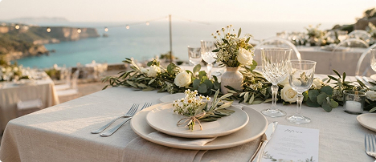

Панорамний вид на море
Панорамний зал «Океан»
- Вид: панорамні вікна на Чорне море на 180 градусів із захопливими світанками.
- Оснащення: професійний концертний звук, динамічне світло, сцена для live-гурту.
- Переваги: власний вхід, гримерна кімната й приватна лаунж-тераса для гостей.
Формат банкету
від 1 800 грн / гістьДетальніше про зал
від 1 800 грн / гістьДетальніше про зал